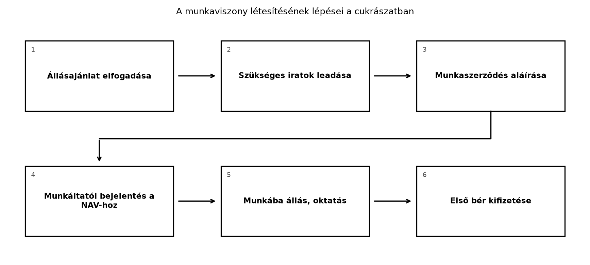
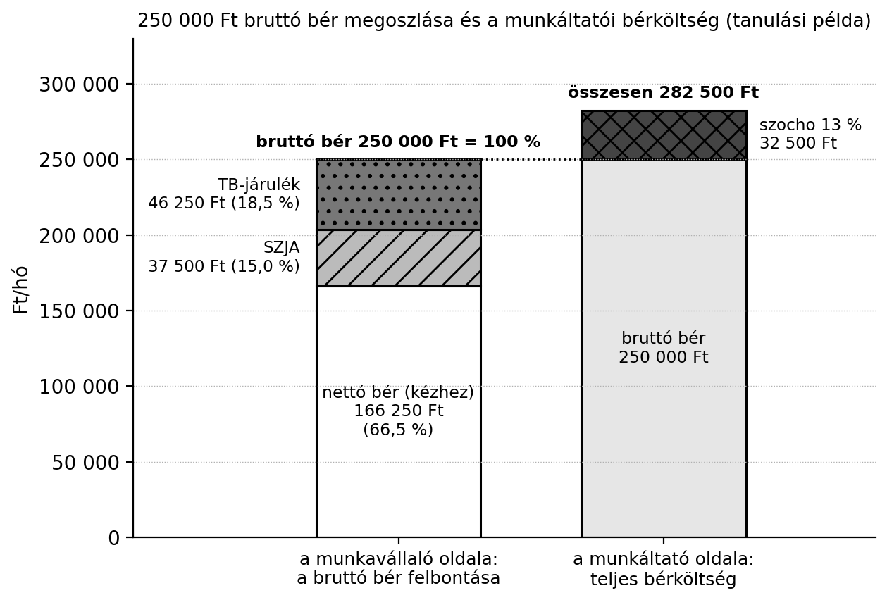

Képzeld el, hogy frissen végzett cukrászként megkaptad az első állásajánlatodat egy belvárosi cukrászdában. A munkáltató azt mondja: „Holnap gyere be, írunk szerződést, és kezdhetsz is.” Örülsz, de közben azon gondolkodsz: mit kell aláírnom? Milyen papírokat vigyek? Mennyi lesz pontosan a kézhez kapott fizetésem? Ha ezeket nem ellenőrzöd, később vitába kerülhetsz a bérről, elveszítheted a táppénzt vagy a nyugdíjjogosultságodat. Ez az alfejezet abban segít, hogy a munkaviszony létrejöttét ne elszenvedd, hanem értsd és ellenőrizni tudd.
A cukrászüzemben a munkaviszony nem rakétatudomány, de szigorú szabályok védik mindkét felet. Ha pontosan tudod, mi kerül a munkaszerződésbe, és hogyan lesz a bruttó béredből nettó bér, akkor magabiztosan írod alá a dokumentumokat, és a béredet is utólag le tudod ellenőrizni.
A munkaviszony létrejötte egy folyamat, amely az ajánlat elfogadásától az első fizetésig tart. Az alábbi folyamatábra ezt mutatja be.

A béredből levont adók és járulékok szemléltetése egy tanulási példán keresztül:

Az ábrán látszik: a munkáltató és a munkavállaló megállapodik a bruttó bérben, de a munkavállaló csak a levonások utáni nettó összeget kapja kézhez (a bal oldali oszlop a bruttó bér felbontása). A munkáltatót ezen felül további közterhek is terhelik (jobb oldali oszlop: szociális hozzájárulási adó, a példában 13%, ellenőrizendő).
Definíció. A munkaviszony a munkáltató és a munkavállaló között létrejött jogviszony, amelyben a munkavállaló a munkáltató irányítása szerint, személyesen, ellenérték fejében munkát végez. A munkaviszony alapja a munkaszerződés, amelyet a felek írásban kötnek meg.
Jogszabály. A munkaviszonyra a Munka Törvénykönyvéről szóló 2012. évi I. törvény (Mt.) az irányadó. A munkaszerződés kötelező tartalmi elemeit az Mt. határozza meg; a pontos paragrafusszámot a kiadás előtt ellenőrizni kell. A munkáltatónak a munkaviszonyt a NAV felé be kell jelentenie, a munkavállaló pedig a jövedelme után személyi jövedelemadót és társadalombiztosítási járulékot fizet.
A munkaszerződés kötelező tartalma. A munkaszerződésben legalább a következőket kell rögzíteni:
Szabály. A munkaszerződést írásba kell foglalni, és a munkavállaló részére egy példányt át kell adni. A munkáltató csak a munkaviszony létesítésének bejelentése után foglalkoztathatja a dolgozót. A munkabér nem lehet kevesebb a jogszabályban meghatározott minimálbérnél, illetve – ha a munkakör legalább középfokú végzettséget igényel – a garantált bérminimumnál.
Definíció. A minimálbér a legalacsonyabb, jogszabályban meghatározott havi bruttó munkabér, amelyet a teljes munkaidőben foglalkoztatott munkavállalónak fizetni kell. A garantált bérminimum (szakmunkás minimálbér) ennél magasabb összeg, amelyet a legalább középfokú végzettséget vagy szakképzettséget igénylő munkakörökben kell alkalmazni. A cukrász szakmunkás munkakör jellemzően garantált bérminimumra jogosító munkakör. Az aktuális összegek kormányrendeletben jelennek meg, és év közben változhatnak (ellenőrizendő: aktuális összeg).
A munkaviszony fajtái a gyakorlatban:
Tilos. A munkáltató nem foglalkoztathat munkavállalót a munkaviszony NAV felé történő bejelentése nélkül (fekete foglalkoztatás). Nem lehet a munkabért minimálbér alatt megállapítani, és nem lehet a munkavállalót arra kényszeríteni, hogy lemondjon a munkaszerződésben rögzített jogairól.
A cukrászati munkaviszony létrejötte a gyakorlatban a következő lépésekből áll:
A munkáltató a foglalkoztatáshoz az alábbi dokumentumokat kérheti:
| Irat | Rendeltetés | Megjegyzés |
|---|---|---|
| Személyi igazolvány | Azonosítás | Érvényes okmány |
| Lakcímkártya | Lakcím igazolása | Bejelentéshez |
| TAJ-kártya | Társadalombiztosítási azonosító | Egészségbiztosítási ellátásokhoz |
| Adóazonosító jel | Személyi jövedelemadó-azonosítás | NAV bejelentéshez |
| Bankszámlaszám | Bérfizetés | Vagy készpénzes megállapodás |
| Iskolai bizonyítvány, szakképesítés | Végzettség igazolása | Cukrász szakma esetén |
| Erkölcsi bizonyítvány | Egyes munkakörökben | Pl. gyermekétkeztetésben |
| Orvosi alkalmassági | Egészségügyi alkalmasság | Vendéglátásban kötelező |
Kilépéskor kiadandó dokumentumok. Ha a munkaviszony megszűnik, a munkáltatónak ki kell adnia:
Ezeket a dokumentumokat őrizd meg, mert a későbbi álláskereséshez, táppénzhez, nyugdíjhoz vagy munkanélküli ellátáshoz is kérhetik.
A munkaviszonyból származó jövedelem után a munkavállalót és a munkáltatót is terhelik közterhek. A pontos kulcsok évente változhatnak, ezért a számításoknál tanulási értékeket használunk, és minden kulcsot ellenőrizendőnek jelölünk.
Definíció. A bruttó bér a munkaszerződésben megállapított teljes munkabér, amelyből még nem vonták le az adókat és járulékokat. A nettó bér az az összeg, amelyet a munkavállaló kézhez kap, miután a munkáltató levonta a törvényben előírt közterheket.
A munkavállalót terhelő levonások (tanulási példa, a kiadás évében hatályos kulcsok szerint, ellenőrizendő):
A munkavállaló nettó bére tehát kedvezmények nélkül:
ahol a bruttó bér, a nettó bér.
A munkáltatót terhelő közterhek (tanulási példa, ellenőrizendő):
A munkáltató teljes bérköltsége tehát:
Egészségbiztosítási ellátások. A munkaviszony biztosítási jogviszonyt keletkeztet. A munkavállaló a befizetett járulékok alapján jogosult lehet:
Nyugdíj. A munkaviszonyban töltött idő szolgálati időt és nyugdíjjogosultságot eredményez. A nyugdíj összege a befizetett járulékokon és a szolgálati időn alapul. Ezért fontos, hogy a munkáltató valósan bejelentsen, és a járulékok befizetésre kerüljenek.
1. példa (A): nettó bér számítása kedvezmények nélkül
Adott: egy részmunkaidős (heti 25 órás) cukrász bruttó bére . A levonások: SZJA 15%, TB járulék 18,5%. Kedvezmények nincsenek.
Keresett: a nettó bér.
Képlet és behelyettesítés:
Ellenőrzés: a levont SZJA , a TB járulék ; a kettő összege ; . A számítás helyes.
2. példa (B): nettó bér számítása magasabb bruttó bérrel
Adott: egy vezető cukrász bruttó bére ; a kulcsok ugyanazok, nincs kedvezmény.
Keresett: a nettó bér.
Ellenőrzés: SZJA , TB , összes levonás ; .
3. példa (B): részmunkaidős bér számítása
Adott: egy cukrász heti 20 órában (napi 4 óra) dolgozik. A teljes munkaidős bruttó bére ugyanabban a munkakörben lenne. A munkáltató a részmunkaidőre arányosan csökkentett bért fizet.
Keresett: a részmunkaidős bruttó bér és az abból számított nettó bér.
Képlet:
Ellenőrzés: a félmunkaidő arányosan a teljes bér felét jelenti, így a számítás helyes. Figyelem: a munkaszerződésben rögzíteni kell a csökkentett munkaidőt és az arányos bért.
4. példa (C): a munkáltató teljes bérköltsége
Adott: ugyanaz a cukrász, bruttó bér . A munkáltatót terhelő szocho 13% (ellenőrizendő: hatályos mérték; külön szakképzési hozzájárulással nem számolunk).
Keresett: a munkáltató havi bérköltsége.
Ellenőrzés: a munkáltatói terhek összege ; a bruttó bérrel együtt .
Megjegyzés. A fenti kulcsok tanulási példák. A példákban szereplő bruttó bérek (200 000, 250 000, 260 000 Ft) részmunkaidős munkavállalókra vonatkoznak; teljes munkaidős cukrász szakmunkásnál a bér nem lehet a garantált bérminimum alatt (2026-ban 373 200 Ft, a minimálbér 322 800 Ft; ellenőrizendő: NAV, aktuális rendelet). A tényleges adó- és járulékkulcsokat, valamint a minimálbér és garantált bérminimum összegét mindig a hatályos jogszabályok szerint ellenőrizd. A munkavállalót kedvezmények is megillethetik (pl. 25 év alattiak SZJA-mentessége, családi adókedvezmény), amelyek növelik a nettó bért – ezeket a bérszámfejtés során figyelembe kell venni.
Cél: a munkaszerződés és a bérszámítás ellenőrzése, a szükséges iratok rendben tartása.
Eszközök és dokumentumok: munkaszerződés-tervezet, bérjegyzék (ha már van), számológép vagy táblázatkezelő, iratgyűjtő mappa.
Higiéniai munkakezdés (irodai környezetben): Ügyelj arra, hogy a dokumentumokat tiszta, rendezett helyen tárold; a személyes adatokat nem hagyhatod őrizetlenül. Cukrászüzemben az irodai feladatoknál is érvényes a higiénia: a papírokat elkülönítve kezeld az élelmiszeres munkaterülettől.
Biztonsági korlát. A munkaviszony létesítése nem gépkezelés, de a munkába állás előtt a munkáltató köteles munkavédelmi és tűzvédelmi oktatást tartani. Ezt ne hagyd ki, mert a cukrászüzemben forró cukor, éles kések és gépek várnak.
Technológiai lap: a munkaszerződés-ellenőrzés lépései
A munkaviszony adminisztratív minőségét a következőkkel ellenőrizheted:
Tünet: nem kapsz munkaszerződést, vagy csak
szóban állapodtok meg.
Ok: a munkáltató nem akar nyomot hagyni.
Megelőzés/javítás: ragaszkodj az írásbeli szerződéshez;
szóbeli megállapodás alapján ne kezdj munkába. Jogszerűtlen
foglalkoztatás esetén fordulj a munkavédelmi hatósághoz vagy a
NAV-hoz.
Tünet: a nettó béred alacsonyabb, mint amit
kiszámoltál.
Ok: a munkáltató rosszul vonta a járulékokat, vagy nem
vett figyelembe valamilyen kedvezményt (esetleg többet vont).
Megelőzés/javítás: minden hónapban ellenőrizd a
bérjegyzéket; ha eltérés van, kérd a bérszámfejtő magyarázatát, és
javíttasd.
Tünet: a munkáltató nem jelentett be, ezért nem
kapsz táppénzt, ha megbetegszel.
Ok: a foglalkoztató elmulasztotta a biztosítási
jogviszony bejelentését.
Megelőzés/javítás: a munkaviszony kezdetekor kérdezz rá
a bejelentésre; ha utólag derül ki, az adóhatóság utólag is rendezi, de
a biztosítási idő elvész. Azonnal jelentsd a NAV-nál.
Tünet: kilépéskor nem adnak ki semmilyen
dokumentumot.
Ok: a munkáltató hanyagsága vagy jogellenes
gyakorlat.
Megelőzés/javítás: a kilépés napján kérd el a
munkáltatói igazolást és a jövedelemigazolást; ha nem adják, írásban
követeld, és szükség esetén a munkaügyi hatósághoz fordulj.
Egy fiatal cukrászlány (nevezzük Annának) a szakmunkásvizsga után elhelyezkedett egy vidéki cukrászdában. A munkáltató azt mondta, hogy egyelőre „próbaidőre” nem ír szerződést, mert az bonyolult, és úgyis csak pár hétig tart. Anna örült a lehetőségnek, és aláírás nélkül kezdett dolgozni. Két hónap múlva megbetegedett, táppénzre ment volna, de kiderült, hogy nincs bejelentve a munkaviszonya. Így sem táppénzre, sem egészségügyi szolgáltatásra nem volt jogosult, és a kieső idő elveszett a nyugdíjához. A munkáltatót megbírságolták, de Anna kára akkor már részben megtérült, részben nem. Tanulság: munkaszerződés nélkül soha ne kezdj munkát, mert a jogviszony hiánya a te kockázatod.
Egy másik eset: Béla, részmunkaidős cukrász, 250 000 Ft-os bruttó bért kapott, de a bérjegyzéken 158 000 Ft nettót látott. Kiszámolta a levonásokat: SZJA 37 500 Ft, TB 46 250 Ft, nettó 166 250 Ft. A különbség 8 250 Ft volt. Kiderült, hogy a bérszámfejtő 15% helyett tévesen 18,3%-os SZJA-t vont le ( Ft, ez a bruttó bér 18,3%-a), így 8 250 Ft-ot túlvont. Miután jelezte, a következő hónapban a különbözetet visszakapta. Tanulság: mindig ellenőrizd a bérjegyzéket, mert a hibák javíthatók.
1. feladat (A)
Definiáld a munkaszerződés fogalmát, és sorold fel legalább négy
kötelező tartalmi elemét.
2. feladat (A)
Egy részmunkaidős (napi 4 órás) cukrász bruttó bére 200 000 Ft/hó,
kedvezmények nélkül. Számítsd ki a nettó bérét a tanulási kulcsokkal
(SZJA 15%, TB 18,5%).
3. feladat (B)
Egy részmunkaidős cukrász heti 30 órában dolgozik. A teljes munkaidős
bruttó bér 400 000 Ft lenne. Mennyi a részmunkaidős bruttó bére és a
nettó bére?
4. feladat (B)
Egy munkáltató egy részmunkaidős (napi 5,5 órás) dolgozónak 260 000 Ft
bruttó bért fizet. Mennyi a munkáltató teljes havi bérköltsége, ha a
szocho 13%?
5. feladat (C)
Egy munkáltató azt mondja, hogy a béredet a jövő hónaptól „borítékban”
kapod, mert így kevesebb adót fizetsz. Elemezd, miért jogszerűtlen és
milyen kockázatai vannak neked. Mit tennél?
6. feladat (D)
Tervezz egy munkaszerződés-ellenőrző listát egy cukrász állásra (fiktív
adatokkal). Írd be a munkakört, a munkaidőt, a bruttó bért, a próbaidőt,
és számold ki a várható nettó bért. Kérd meg egy társadat vagy
oktatódat, hogy ellenőrizze a listádat.
Önellenőrzés – válaszok
Feladatok megoldása
1. feladat (A)
A munkaszerződés a munkáltató és a munkavállaló között létrejött, írásba
foglalt megállapodás, amelyben a munkavállaló vállalja, hogy a
munkáltató irányítása szerint, személyesen, ellenérték fejében munkát
végez. Kötelező tartalmi elemek: felek azonosító adatai; munkakör;
munkahely; munkabér; munkaviszony kezdete; munkaidő mértéke.
2. feladat (A)
Adott:
;
SZJA 15%, TB 18,5%.
Keresett:
.
Képlet:
.
Ellenőrzés:
,
;
;
.
Helyes.
3. feladat (B)
Adott: heti 30 óra, teljes bruttó
.
Keresett: részmunkaidős bruttó és nettó.
Képlet:
.
Nettó:
.
Ellenőrzés: 30/40 = 0,75; a bruttó arányos; nettó számítás helyes.
4. feladat (B)
Adott:
;
munkáltatói teher 13%.
Keresett:
.
Képlet:
.
Ellenőrzés:
;
.
Helyes.
5. feladat (C)
A „borítékos” fizetés (fekete bér) jogszerűtlen, mert a munkáltató nem
vallja be a munkabért, és nem fizet utána közterheket. A munkavállaló
kockázatai: nincs biztosítási jogviszony (nincs táppénz, nyugdíj,
baleseti ellátás); a munkaszerződésben alacsonyabb bér szerepel, így a
munkavállaló jogai csorbulnak; az adóhatóság mindkét felet
szankcionálhatja. A munkavállaló ilyen esetben ne fogadja el, kérjen
írásos, bejelentett foglalkoztatást, és ha kell, forduljon a NAV-hoz
vagy a munkaügyi hatósághoz.
6. feladat (D)
Példa ellenőrző lista:
- Munkakör: cukrász
- Munkaidő: teljes, heti 40 óra
- Bruttó bér: 250 000 Ft
- Próbaidő: 3 hónap
- Nettó bér (kedvezmény nélkül): 166 250 Ft
- Ellenőrzendő: szerződés aláírva, NAV-bejelentés megtörtént, bérjegyzék
a levonásokkal egyezik.
A gyakorlati feladat értékelése: a lista tartalmazza a kötelező
elemeket, a nettó bért helyesen számolta ki, és a munkavállalói
teendőket is rögzítette.
A munkaviszony a munkáltató és a munkavállaló közötti, munkaszerződéssel létrejött jogviszony. A munkaszerződésnek írásbelinek kell lennie, és tartalmaznia kell a felek adatait, a munkakört, a munkahelyet, a munkabért, a munkaviszony kezdetét és időtartamát, valamint a munkaidő mértékét. A munkabér nem lehet kevesebb a minimálbérnél, illetve a szakképzett munkakörben a garantált bérminimumnál (aktuális összegek ellenőrizendők). A munkavállaló bruttó béréből a munkáltató levonja az SZJA-t (tanulási példa: 15%) és a TB járulékot (tanulási példa: 18,5%); a nettó bér kedvezmények nélkül a bruttó bér 66,5%-a. A munkáltatót terheli a szocho (tanulási példa: 13%) (külön szakképzési hozzájárulással a tanulási példákban nem számolunk, ellenőrizendő). A munkaviszonyt a NAV-hoz be kell jelenteni, különben a munkavállaló nem jogosult táppénzre, nyugdíjra és egyéb ellátásokra. Kilépéskor a munkáltatónak igazolásokat kell kiadnia. Továbbvitt eredmény. Ezek a fogalmak és a munkaszerződés-ellenőrző lista közvetlenül hasznosulnak a(z) Álláskeresés, önéletrajz, interjú és munkanélküliség alfejezetben: a bérigényt bruttó összegben célszerű megadni, és az ajánlat elfogadása előtt a szerződést ezen szempontok szerint kell ellenőrizni.